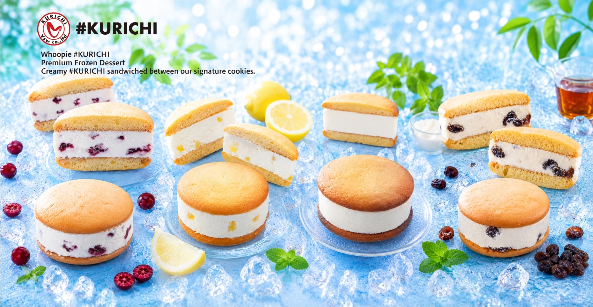

WELCOME TO A LITTLE FUTURE NEW YORK
NY KURICHI STICKER COLLECTION 01 — 11
この街には、
好きがある。
少し未来のNY。
お店で出会った11人には、
まだ知らない顔がある。


NEW YORKERS
REAL CITY / DIGITAL CITYSCROLL TO EXPLORE ↓
01 / OUR NEW YORK
お店の外に、
もうひとつの日常。
街のお店でも、同じ街を写したデジタルNYでも。11人はそれぞれの仕事をしながら、自分だけの「好き」を育てている。
植物、編み物、小説、バスケ、野鳥観察。趣味をたどれば、地区を越えて仲間につながる。Vswの屋上とデジタル広場には、今日も小さな話が集まってくる。
001 / THE CITYいつものNYと、もうひとつのNY。NYC / NEAR FUTURE
02 / THE COLLECTION
11人の、
表と裏。
お店で会うときの顔。休日に夢中になるもの。
シールを開いて、ひとりずつ知っていこう。
全11人を表示しています
気になる人を選ぶと、シールの表と裏、そして仲間とのつながりが見られます。
03 / CITY CONNECTIONS
好きなものが、
街をつなぐ。
ココの手作り「NYすごろく」は、街のお店をひとマスずつ増やしていく。立ち寄った店には、思いがけない友だちの話がある。
ROUTE 01
屋上菜園から、植物の相談と映画のサントラへ。
ROUTE 02
手編みのリストバンドから、秘密の小説の読者へ。
ROUTE 03
借りた椅子と、手作りのすごろくの駒。
次のマスには、誰の好きが待っているだろう。

04 / ABOUT KURICHI
物語のそばに、
クリチ。
特製クッキーでクリームチーズをサンドした、ひんやり楽しむスイーツ。ひと口のおいしさから、この街の仲間たちに会いにいこう。
クリチのシールコレクションを見るSEE YOU AROUND THE CITY
また、街のどこかで。
11人の「好き」を知ったら、見慣れた街も少し違って見える。
もう一度、11人に会う